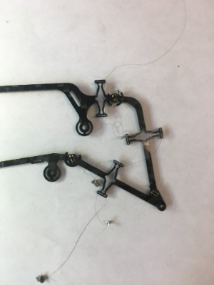
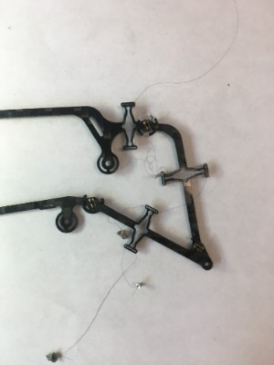

Projects
COBRA
Team Lead for COBRA, the Crater Observing Bio-inspired Rolling Articulator, Northeastern University's submission to the 2022 NASA BIG Idea Challenge. We are developing a modular snake-like robot that combines slithering and tumbling to explore Shackleton Crater and measure water concentration. Led team of 13 undergraduates into research on lunar terrain, mobility and creation of a 20 page proposal. Recently selected as 1 of 7 schools to fully develop our concept.
- Skills: Project Management, Proposal Writing, Robotic System Design

Solar Panel Deployment System
Member of the Northeastern BIG Idea 2020 Competition, working to develop a system to explore the permanently shadowed regions on the moon. I iteratively designed and tested a solar panel deployment system that utilized a torque spring to drive deployment. I independently developed Solidworks models of the entire system along with a flexible gear rack.
- Skills: SolidWorks, 3D Printing, Root Cause Analysis, System Integration
Thrust Vectoring Mechanism
At the Silicon Synapse Lab at Northeastern Univeristy, the team has been developing a flapping wing aerial drone called Aerobat. This drone features dynamically morphing flexible wings that reduce power consumption compared to conventional rotor based systems. I worked on a project this summer that dealt with incorporating pitch and yaw control onto the platform. I designed and prototyped living hinge mechanical amplifiers that could be used for thrust vectoring on Aerobat to control pitch and yaw.
- Skills: Literature review, Mechanism Design, Aircraft Dynamics, Flight Testing

Venusian Surface Drone Design
Member of the Northeastern RASC-AL 2021 Team, developing a mission architecture for a Venus Flyby Mission. Our architecture consisted of a remote controlled balloon airship which would orbit Venus at high altitudes and release two different drone systems to explore the surface. I led the mechanical design of a drone system called the Raven, which was a lightweight drone meant to perform reconnaissance close to the surface of Venus and identify potential landing sites of scientific interest.
- Skills: Aircraft Sizing Calculations, Lift and Drag Calculations, Motor Selection, Requirements Specification, Solidworks

3D Printed Vacuum Manifold
During my internship at Festo Corporation, I helped design and test a vacuum manifold used to carry disposable pipette tips through a cleaning station. I iteratively developed and tested 3D printed prototypes of manifolds to optimize the distribution of airflow.
- Skills: Fluidic Resistor Calculations, SLA 3D Printing, Integration with Gantry System, Creo Parametric, Finite Element Analysis

 
